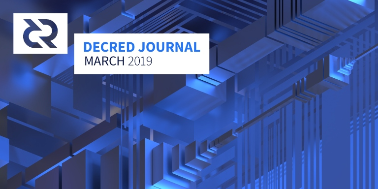

Decred月报 - 3月

在3月份，在治理方面看到了一些重要的提案和投票，并且在开发核心软件上取得了可靠的进展 - 这是Decred的一个相当典型的月份。
最新的共识投票修复闪电网络序列锁定，即将在几乎100%的支持率和54%的参与率下完成，投票预计将于4月11日结束。
在 Politeia 上，发起了 5 项新提案，并有 2 项提案完成投票（一个通过，一个不通过）。被提交的提案包括了 @moo31337 提交的重要提案，提案概述了如何将社区开发基金的使用权力完全过渡到权益人手中。
在 dcrd 里也看到了一些巨大的重构，这将在 v1.5.0 发布时为用户带来显著的性能提升，当然高级用户目前可以从源码构建。
开发进展总结
dcrd: 一项大的重构让初始同步区块时间提升 20-25%, 在常规硬件下耗时大约 45 分钟。另一个好处是降低了投票广播的延迟：
影响[延迟]的因素很多,但在我的节点里平均每节点为 ～70 毫秒至 5 毫秒以下。我们需要更多的数据才能获得更准确的数值。这个本身是好事，但真正的好处将在重大网络升级时才能体现，多个投票节点节省的时间更可观。全面部署整体改善高达～90％。(@davecgh)
作为优化的一部分，txscript模块使用新的零分配脚本标记器进行完全重构。
初始同步当然是一个重要因素，但真正的好处在于 mempool 正在进行的交易处理。另一个非常好的方面是导出的标记化器，这意味着可以对 txscript 之外的脚本进行零分配分析，这对于构建应用程序（例如原子交换，主根等）非常有用。(@davecgh)
由于更改了关键且容易出错的共识代码，因此通过精心制作了一系列122个单独的提交，让每个提交消息彻底描述其目的，确保保持共识，通过所有测试，使这些更改更容易推理和审查。
另外：因重构大幅削减了大约 2K 行代码。越少代码，越少漏洞！
另外也发现了一个删除额外 10-15 分钟的初始块下载的可能性，但完善它需要几个月的扎实工作 (贡献者来吧)。
其他已整合工作:
- 初始的 Bech32 (BIP 173) 支持已从 btcsuite 移植。
- 推出可重构的 LRU cache模块。
- 重构
hdkeychain模块使代码更简洁及更易测试。 - 增加新的背景区块模版生成器。
- 许多重构及测试改进以增强代码对于意外改动的抵抗性。
在3月份里，总共有 9 位贡献者的209 份提交被整合。
进行中:
总体而言，像背景区块模板生成器和txscript优化的一部分这样的变化旨在通过改进挖矿基础设施和减少投票传播延迟来提高可扩展性并减少网络的错过票数量。txscript和chaincfg重构的另一部分是基础设施工作，以正确引入新的脚本引擎版本，以便进行未来理想的共识变更，例如去中心化财政支出。即使该提案没有通过，我们仍然需要这些基础设施来进行各种未来与脚本相关的共识变更。
dcrwallet: 错误修复和代码维护。整合了6位贡献者的12 份提交。
Decrediton: 实时的可视化选票活动图和一些较小的修复 - 2位贡献者的 5 份提交。
Politeia: 添加提案文本预览标签，完成提案版本的查看差异功能，更改默认评论排序，先显示最高分评论，添加在 URL 中设置排序功能。同时也修复了许多错误。这些更改已在主分支中合并，并将在测试网页测试后部署在主提案网页上。
在代码基础设施方面，承包商管理系统的几个部分在快速开发阶段后进行代码库清理，之后进入主分支。测试覆盖率已从13％增加到19％。
高级用户可以在投票期结束后投票的这个漏洞被发现。漏洞被发现已有一段时间了，目前正在等待部署修复。在发现有些选票选择晚投票后，修复程序已于3月13日部署。Politeia UI 可能会显示某些提案的投票计数略有错误，但投票结果不受影响。
有关 Politeia，最令人放心的是所有数据都是公开的，并且定期时间戳到 Decred 区块链上。这意味着任何人都可以从 github 中提取数据并加密验证在投票期内（+/- 1小时）投出的选票以及在投票期结束后投票的选票。(@lukebp 在 Politeia Digest 第12期)
来自 6-9 位贡献者，总共 40 份提交已在politeia 及 politeiagui合并。
dcrandroid: 小错误修复，添加中文翻译，查看交易历史的速度优化。
dcrios: dcrios beta 已经完成并可以接受更多测试。欢迎测试人员在TestFlight中下载 app。目前还存在数个小错误。在 iPod Touch 设备上有已知并正在修复的排版错误。目前的问题是处理一些批准 Apple Store 账户的手续。一旦完成将立即正式发布客户端。
dcrdata: 第4版已发布并上线explorer.dcrdata.org。
面向用户的变化包括大幅度的重新设计页面样式，更多信息和更好的组织，Politeia提案页面，时间间隔的区块信息，图表的日志和线性缩放，汇率监控和许多小改动。据说，HODL水印也已经消失。对于开发更新，请查看完整的发布说明。
在 3 个月的开发过程中，v4 版本在 11 个贡献者的 325 个提交中获得了惊人的 48K 行添加和19K 行删除。恭喜dcrdata！
有些功能和改进已经在酝酿 4.1版本，因此应该相对较快地发布次要版本。4.0范围相当大，但都有充分的理由并且是值得的。(@chappjc)
进行中: 继续进行负载测试和性能优化，通过 Go 模块改进依赖管理，实时共识投票跟踪, 更快的图表, 提案投票图表 和 dcrextdata - dcrdata的一个组件，用于跟踪区块链中不存在的数据，例如有关交易价格和矿池的信息。
Ticket splitting: 已发布的 v0.7.6 优化从 dcrdata 获取未使用输出并添加 macOS 的二进制文件。
docs: 全新更详细的分票 Ticket Splitting指引,重做并扩展共识投票规则Consensus Rules Voting，提案指南更新以包括社区基金资助提案的关键要求。
decred.org: 更新交易所信息和翻译，自托管介绍影片以去除链接 YouTube 。
其他:
- Raedah Group 正在尝试使用 Go 编写 godcr - 一个拥有多种用户界面模式的替代钱包客户端。命令行界面，终端，浏览器nucular 和 Fyne 前端 GUI 的工作在进行中。(截屏)。
- Raedah Group 也正在开发 dcrseedgen - 一个使用 Go 和 nucular UI 编写的独立 Decred 种子生成器。
- timestamp.decred.org获得了重新设计，文本也被重新编写。
- 新的 dcrtime_checker工具可以（不通过 dcrtime）直接验证区块链的锚点。
- 大约一半的选票矿池 （VSP） 已升级到自托管验证（self-host captcha）来保护他们用户的隐私。请在这里追踪状态。
3 月开发活动数据: 分布于 8 个最活跃存储库（repositories) 有 360 个有效 PRs, 497 个主要提交, 46K 行添加 及 34K 行删除。每个存储库中有来自 2-9 位开发者的贡献。
人员
欢迎新到来的首次贡献者，代码在 GitHub 上合并：@devwarrior (atomicswap) 及 DominicTing (dcrweb).
治理
在 3月里，DCR 基金会收到了 16,288 DCR，并花了 13,595 DCR，使用 DCR 在 3 月份的每日平均美元价格 18.14 美元计算，本月收到 29.6 万 美元以及支出 24.7 万 美元。由于这些付款用于支付 2 月份完成的工作，因此可以用 2 月份的平均价格 16.51 美元计算 - 在这种情况下，美元收到的数字是 26.9 万美元以及支出 22.4 万美元。4月9日 为止，基金会余额为 608,560 DCR (按 25.26 美元计算相当于 153万 美金)。
于 4月10日 的提案状态:
- Trust 钱包整合提案 在 9.3K 投出的票中以 67% Yes 通过。在投票通过前，Trust 钱包开发人员已经开始了钱包端的整合。
- ATM 整合 - 计划阶段提案 在 12.7K 投出的票以 52.5% Yes，未能达到 60% 而不通过。这里讨论了重新提出投票的讨论
- 非洲（加纳）提案 - Bring decred to Africa(Ghana) Adoption program for merchants and businesses 由 @georgepro 提出，要求 41,054 美元资助 3 个月的加纳商家采用计划。投票已经开始，并在 4月10日为止达到法定票数以及 95% 的 No 票。
- 咖啡钱包提案在被废弃后重新提交的申请被拒绝。管理员认为这是尝试使用Politeia 来推广产品的手段。
- 社区资金开销去中心化提案 - Decentralize Treasury Spending 由 @moo31337 提出。提案概述了两步流程，其中支出交易草案在 Politeia 上发布被审查后，由利益相关者在链上投票。预计开发，测试和达成共识的投票需时 9-12 个月，预算为 20-25 万美元。
- EXMO 交易所的法币交易对集成提案-Fiat pairs integration on EXMO Exchange 由 vadymprykhodko 提交。这是续在 r/decred 发布的预提案发布的。提案要求 23，8000 美元以支持在一个东欧地区受欢迎的交易所 EXMO 增加 Decred 的法币交易对。
- 修订 Decred 宪法提案 - Amendment to Decred Constitution 由 @richardred 提交。这是随着一连串的讨论后提交的。这里追踪讨论内容。
预提案:
- 印度教育和宣传活动提案 - India education and awareness campaign 由 u/Blocknext 提出。在聊天室讨论中，有用户指出在 Dash 的提案系统里也有个类似的提案。
- 第二次宪法修正提案 - Second constitutional amendment 由 @richardred 提出，宣布 2月8日 为国际 Stakey 日。
decredcommunity.org 受到了一些批评表示该网站并不开源而且在提案内容里面没有明确说明。其中一个论点是社区基金从未资助过任何非开源工作内容，除了一些不能公开的整合工作外。同时资助非开源软件也违背项目宪法。讨论内容记录在这里，这些讨论同时也激发了一些提案指南的改进，列明任何成果的任何限制。
@richardred 发布了一项分析，探讨早期投票在什么程度上会影响晚期投票者的行为，和这种影响是否会改变投票结果。
更多细节，分析与评论请参考 @richardred 的 Politeia 简报第 12 期 和 第 13 期。
要获得有关 Politeia 提案活动的通知，请在您的 Politeia 个人资料中启用电子邮件通知，或在推特上关注 @pi_crumbs 和 @slices_of_pi。
其他讨论:
- 社区基金开销速度和资金的分配。
- 有关财政报告格式的主意.
- 对于推自己的评论问题再次被提出并达成共识决定禁用该选项。相关讨论记录了该课题的所有讨论。
- @richardred 提议将法定票数基于Yes 票的比例。(目前 Yes+No 选票都被计算)。他也制作了一个模拟不同的法定票数计算方法场景。
网络
算力: 3 月算力在低点 221 Ph/s 及新高 570 Ph/s 浮动。在 3 月份上半月分算力维持 320 Ph/s 左右，但在月底时升高超过了 400 Ph/s。 在 4 月 1 日 根据 dcrstats.com 数据显示，矿池算力分布为：F2Pool 23%, Poolin 20%, lab.antpool.com 16%, BTC.com 12%, UUPool 11%, Luxor 3.2%, CoinMine 0.4% 及其他 14%。矿池分布数据为大约值无法精确计算。
投票: 按 4月1日 dcrstats.com（数据显示）, 30日 平均票价为 112.3 DCR (+0.6)。价格在 108.6 DCR 至 117.9 DCR之间浮动。锁仓数额为 4.47-4.61 百万 DCR, 大约占总流通量的 46.9-48.6%。
节点: 截止于 4月1日，dcred.eu显示 共有 191 public listening Node 及 336 Normal Node。版本分布: v1.5.0 dev builds: 6.3% (-2.3%), v1.4.0: 55% (+12%), v1.4.0 dev and rc builds: 5% (-2%), v1.3.0: 17% (-6%), v1.2.0: 9.5% (-0.5%), v1.1.2: 4%, v1.1.0: 1.7% (-0.3%)。
挖矿
- dcrstats显示新矿池: 蚂蚁矿池lab.antpool.com
- OKEx 中文页面显示 OKEx 已增加支持 Decred 的新矿池。
- Scott Offord 在推特上公布 MicroBT 将以 750 美元售卖最后 200 台 D1矿机并之后不打算推出新的 Decred矿机。
落地应用
OKCoin 公布 上线 DCR/BTC，DCR/ETH 及 DCR/USD 交易对。这为 DCR 增加了另一个法币渠道。该消息是在三藩市联合筹办的活动后发布的。
CoinText 已支持 DCR。该服务将允许用户发送 DCR 至任何美国及加拿大手机号。请了解该服务如何运作并注意只可发送小额 DCR。
外联活动
3月份是 Decred-Ditto 关系历史上最成功的月份之一。从帮助在旧金山 OKCoin 办公室组织非常成功的活动，到登上“华尔街日报”的专题文章，Ditto 和 Decred 在宣传方面都取得了一些重大成果。 Ditto 收到了许多其他加密货币公司和爱好者的信息，祝贺华尔街日报并赞扬他们举办了一场成功的活动。
Ditto's 三月份成就:
-
通过协调与Jake Yocom-Piatt 和 Placeholder VC，Chris Burniske，在华尔街日报中发布了一篇关于 Decred 的专题文章。这篇文章比迄今为止的媒体报道都更有效且传播更广泛，向非加密货币圈子及主流的金融圈观众描述了 Decred。 - 这显着提高了 Decred 在加密货币圈外的知名度和可信度。全文请参阅, 在这里可查阅详情。
- 促成了 5 个访问: 与Laura Shin (the host of the Unchained/Unconfirmed podcasts) 的背景访问, 与 CryptoBriefing 分析员用于一篇深度研究报告的 2 个访问，一个与 The Block 成功打造的高效深度推广 Decred 的访问，以及与华尔街日报成功登出专题文章的访问。
- 协助举办 OKCoin-Decred 的上线活动。
- 参与了旧金山第一个 Decred meetup。感谢团队成功组织这个60多人出席的活动。
- 为Decred Assembly 视频提供格式和内容创意。
- 起草一份关于选票如何运作的高级消息（待定）。
- 在 investinblockchain.com 上为社区基金起草了一份文章并在四月份成功发布
有关更多细节，请参阅 Ditto 于 3月1日, 3月15日 及 3月29日发布的双周更新。
讨论:
- 重新探讨给予“decentralized credits” 更多关注的老想法。
- 有关 Decred 是否需要一个更具体的称呼，而不是 “skin in the game”被讨论，这是一个模糊和许多加密货币项目使用的陈述。放弃流动性以换取参与治理权的决定需要一个更有意义的称呼，以反映 Decred 与其他项目之间的差异。这个概念及其他提议的概念名词在这个 issue中被记录。
社区活动
已出席:
- 首个旧金山 Decred Meetup 美国旧金山。 @max_bronstein 分享到: "活动非常成功！活动出席率很高，超过 50 人出席并且群众很活跃。Chris 对网络的发展给了很好的概述，并提到了 HAS 框架 - （高安全性，适应性强的代码，和可持续性的资助模式（hypersecure, adaptable code, and sustainable funding model）。(照片)
- Decred and Decentralized Governance 美国波特兰。 @Eli 和 @oregonisaac 表示: "虽然灯光不太好，但是出席率很好！我们有 14 位热情的出席者参与 Isaac 关于 Decred 及 去中心化治理的演讲。我们一直讨论到包间关上，酒吧关门并在外面继续讨论。参与者包括了波特兰加密货币社区及社区成员/贡献者。我们很惊讶在meetup结束后延续到晚上 10 点的讨论（原定计划 meetup 8点结束(照片)
- Just HODL It @ SXSW 2019 美国奥斯汀。 @moo31337 代表 Decred 出席。
- The Next 10 Years: Crypto Boom, Bust, or Buidl? 由 Decred 和 OKCoin 在美国旧金山举办。如 @liz_bagot 报导, "该活动非常成功 - 大约 110 人出席，包括很多的 VC 和加密货币公司 CEO。Ditto 接收到很多赞赏，而且很多人在活动结束后留下交流更现实该活动质量很高。来自 Placeholder VC 的 Chris Burniske 和 Alex Evans，还有 Jake 在该活动演讲并吸引了很多的群众。“(照片)
- Restoring Trust through Blockchain Governance 加拿大多伦多。 (照片)
- 澳洲墨尔本的 Swinburne 科技大学演讲。@eSizeDave 和 @Zohand 向金融科技课程的研究所学生介绍加密货币。观众对于演讲中有关法币的事实感到惊讶，之后演讲简要的介绍了比特币然后介绍 Decred 的 PoW/PoS 混合共识机制，治理，Politeia，项目发展及路线图。完整报告查阅这里. (照片)
- Crypto Conference 2019 德国柏林。该活动是柏林区块链周的一部分。@karamble 介绍 "数字货币的适应性 Adaptability in Digital Currencies". (照片: 1, 2)
- 中国青岛 海创链 HCHchain Accelerator 的演说。@Dominic 介绍了 "什么是Decred?" 并 "展示了 Decred 中文社区的活力。活动中也收到了许多有趣的提问, 例如目前在微信上讨论的将投票权委托给VSP可能会影响链上投票结果。(照片)
即将到来的:
- Coordinating Open Source: Today and Tomorrow 美国旧金山，4月18日。该活动将在 Coinbase 总部，与 Coinbase 托管服务联合举办。@lukebp 将介绍 Decred 独特的治理及资助模式。介绍过后也将会有个关于不同的资助模式的讨论。
- Crypto Governance - It is a matter of survival 澳大利亚墨尔本，4月18日。该活动将会有个关于治理的小组讨论，及Politeia 的演示。活动由 Apollo Capital 和 Decred 合办。
- Jalisco Talent Land 墨西哥瓜达拉哈拉，4月22-26日。细节可联系@elian
- Blockchain Summit 摩洛哥拉巴特，4月24日。 @arij (Slack 用户@butterfly) 将介绍 Decred。
- 德国柏林的 Decred Meetup， 5月5日。@jholdstock 将介绍 Decred 概述，而 BlueYard 的 Philipp Banhardt 将讨论他们的投资论文。由 BlueYard Capital 举办。
- 美国纽约区块链周 NYC Blockchain Week，5月11-16日。7 位社区成员组成的团队将在各地点出席活动。
- Criptolatinfest 哥伦比亚波哥大，5月18日。Decred 将有个演讲机会。
媒体
社区活动:
- @Denni Lovejoy 积极参与 #writers_room 讨论为通过的钱包教程提案的视频制作准确的脚本。
- @anshawblack 将在 5 月前往纽约与多位录制播客。
- Decred 月报现已复制到 decredcommunity.org。注意角落漂亮的国家旗帜按键转换翻译语言。
- @max_bronstein 整合了 Decred Canon - 一系列帮助人们熟悉 Decred 项目的阅读材料和资源。
- 由 stakey.club 的 @mm 发布的新文章: 与多个设备分享 dcrd, Decred Verifier 检测哈希及签名的脚本。
部分文章:
- Decred的独特共识机制离完全去中心化有多远？ by Trevor Holman (cryptonewsz.com, missed in Feb issue)
- 最佳的链上治理系统 by @Haon (medium, missed in Feb issue)
- Decred: 深度报告 by Smith + Crown (smithandcrown.com, 19页报告)
- 数字货币行业存在分叉问题！链上治理能否解决？ by Florian Gheorghe (beincrypto.com)
- Decred 的目标是达到完美的去中心化 (华尔街日报, 欢迎分享)
- Decred, 链上治理实验 by Steven Zheng (theblockcrypto.com)
- PoW/PoS 混合共识系统 by @richardred (币安)
- Decred's "Skin-in-the-Game" 治理实验 by Jeremy Epstein (neverstopmarketing.com)
- 更多交易所，更多接触：Decred 增加覆盖和流动性 by @Dustorf (medium)
- Decred 概览 by Casey Caruso (medium)
- 我是如何在非洲宣传 Decred by @George Pro (medium)
c0的最新资讯:
Haon: https://crypto.bi/tape/blog/dcr/ - "Decred的创始人原来帮比特币开发了btcsuite项目"
jy-p: 在btcsuite工作了一段时间，给了我们创立Decred 所需要的观点。我们的第二个项目，炸鸡，是我们创建自己的路易斯安那厨房的原因
翻译:
- Decred 是怎么创立的? 荷兰语 by @jazzah
- Decred 防分叉详细分析 荷兰语 by @jazzah
- Decred 1 月和 2 月 月报 翻译 到: 阿拉伯语 by @arij, 中文 by @guang, 波兰语 by @kozel, 俄语 by @DZ, 西班牙语 by @elian and 越南语 by Duyên Em. 感谢散播信息!
音频:
- 你知道数字货币吗-26集: Decred. @moo31337 谈到他的背景，什么是Decred，它的混合机制，稳定性，提案系统和 DEX。 (didyouknowcrypto.com)
- The Blockcrunch - Decred的治理系统是怎么运作的? 访问@Haon的第一部分，提到了Decred的治理，投票者奖励，议案，为什么同时需要矿工和投票者。(libsyn.com, itunes, spotify)
- The Blockcrunch - Decred的链上治理.访问@Haon的第二部分。链上投票是怎么运作的，投票的形式，PoS的公平性和去中心化特质，恶意参与者的威胁。(libsyn.com)
CoinMarketCap 开始显示加密资产的新指标 FCAS 等级。Fundamental Crypto Asset Score （FCAS）是由 Flipside Crypto 自 2017 年初开始追踪并对于超过450个项目的评级。在这里的解释说明系统的目标是通过尽量无视价格浮动而专注于客户活动及开发者行为，来回答 “这个加密项目是否可以推出人们要用的产品，和人们是否正在使用它？”。于 4月9日位置 Decred 被评级 为 "A" 778/1000。一些背景数据：Litecoin 752, Zcash 792, Bitcoin 862, EOS 910, Ethereum 914.
社区
截止于 4月1日 的社区数据 :
- Twitter 关注量: 40,309 (+512)
- Reddit 关注用户: 9,405 (+40)
- Matrix 用户: 284 (+18)
- Slack 用户: 6,639 (+58)
- Discord 用户: 2,124 (+23), 发帖数: 161 (+30)
- Telegram 用户: 4,042 (-23)
- YouTube 关注量: 3,764 (+18)
- Facebook 关注: 3,165 (+24), likes: 2,906 (+10)
- LinkedIn 关注: Decred page 495 (+12), Politeia page 29 (+0)
- GitHub dcrd : 479 (+5), fork: 1,257 (+20)
社交系统新闻：
- Stakey 表情包已登陆 Riot 网页版，安卓版及iOS在Matrix客户端上线。感谢 @lustosa 和 Matrix 团队! 表情包的激动测试完全瘫痪了 #general频道。已知问题：Matrix表情包不会桥接到 Slack 和 Discord。@jrick 提示到: 这些表情包是在 Matrix 所有频道，即便与Decred无关都可以使用。请明智的使用。
- 桥接已关闭信息修改。如果您在Discord 或 电报修改信息，修改的信息将不会转送到 Matrix（不会生成重复信息）
- 正在关闭桥接软件(matterbridge)的信息修改选项后 Right after disabling message edits in our bridge software , an untested code path was hit that took down the bridge for a few hours. @dhill quickly located the bug and submitted a pull request.
- 新的#101聊天室是为了帮助新手和解决简单问题而创建。该聊天室已桥接到 Slack，Discord 和 电报。由于电报群的广告很多，桥接到电报群是少见的。之前的 #telegram 聊天室就是因为太多广告并缺乏管理而被终止桥接的。
- Telegram 防护: @Aztec 团队将机器人"slapper bots" 升级，会基于低质量内容剔除用户或机器人，并增加机器人 "shield bot" 以对新用户进行验证。
- 中文社区成员成功入驻链节点，链节点为巴比特论坛 8btc.com 的升级版，为最大的中文加密货币社区之一。
部分 Reddit 讨论: "Skepticism Sunday" 帖 - Mar 3 及 Mar 24; 多少人愿意以in DCR接收工资; 关于使用 Kialo 作为环绕着做决定更系统性沟通的工具; 提议在 Politeia 上增加民意调查功能。
市场
在 3月中 DCR 交易价格为 美金 15.93-23.26 / BTC 0.00414-0.00596。平均日汇率为 18.14 美元。
相关外部信息
GitHub正在更新他们的政策. 新的草案已发布，并将于4月19日生效。其中的变化是承诺跟随不要跟踪指引，将会共享用户数据于更多的第三方处理器和第三方用户跟踪器。这个改变可能会对Decred贡献者造成影响 - 如果您知道有什么影响，请在这里或Reddit上发表评论。有些变化可能令人不愉快，但对于大多数公司来说很常见。我们可以借此机会反思我们对免费资源的信念。此外，与大多数公司不同，GitHub所有版本的政策文件都透明地保存在Git代码库中，任何人都可以复制和检查。Decred已经数次讨论建立类似代码库的想法，并且已建立一个概念沙盒显示原型。
恒星币（XLM）在2017年4月被一个通胀漏洞利用，发行了22.5亿枚XLM(当时价值1000万美元，占流通供应量的近25％)。这个漏洞在当时没怎么被报道，由恒星开发基金会（SDF）修复。他们从社区储备中焚烧了相同金额的XLM以抵消意外的通货膨胀。SDF可以识别，修复和缓解这样一个重大的漏洞，说明了恒星币比较中心化。
PIVX经历了一个通胀漏洞，该漏洞在3月被利用。该漏洞涉及网络的zerocoin协议（zPIV），并允许攻击者伪造序列号并使用从未被铸造过的zerocoin。在确定漏洞并且禁用zPIV交易（直到可以修复）之前，五天内创建和花费了568,897 PIV（约438,000美元）。除了基本启示，如“共识代码很难”和“密码学很难”，这个案例还有更多值得思考的东西。首先，PIVX在发现漏洞后使用了其中一个“sporks”禁用了zerocoin功能。有这些sporks键的人有能力影响整个网络。其次，这个漏洞被发现是因为一些节点从OpenSSL切换掉让bug被忽视(OpenSSL有着令人疑问的质量)。虽然这些节点不完整，但它仍然显示了不同软件之间的不匹配如何帮助发现漏洞。第三，可以确切地知道有多少硬币被铸造，因为PIVX的zerocoin协议允许供应被审计，与其他一些隐私协议不同。
以太坊正在积极讨论由区块奖励资助的开发基金。由Gitcoin联合创始人启动ERC 1789和EIP 1890概述了开源协议采用的融资模式和维护议案。一个相关的GitHub项目，收集了文件和50多个问题。
达世币为Trust Protectors举行选举，新的监督信托已经成立，信托拥有和控制Dash Core Group。
达世币已完成开发“决定性主节点列表”，自动化执行少于4个输入的交易。
目前达世继续通过裁员和薪金冻结来减少财政支出。
Tezos 完成第一轮雅典升级投票。这一轮，投票者需要在两个升级版本中选择怎么提高gas限制。他们选择了雅典A版，这减少了最小卷尺寸并降低了投票者的加入门槛。该过程现已进入下一阶段，投票者必须确认所选提案。
Grin 开发者在每周治理会议中投票为第三位全职开发人员提供资金。 有趣的是Grin的报告和透明度：GitHub上发布了多个版本文档，包括决策日志，会议记录，收入和费用。
Poloniex 承诺将一部分的Grin交易收益给予Grin基金.50％收益将在第一个月捐赠，25％在未来11个月内捐赠。在这是非常罕见和慷慨的行为。
Jack Dorsey 宣布 Square希望资助工程师和设计师全职投入比特币和加密货币生态系统，作为一种方式回馈社区。一个回复指出，我们不需要嵌入协议的“开发基金”，因为网络参与者有足够的激励来资助他们的基础设施。Decred的案例中，如果财政部被认为不再需要，那么利益相关者有权将其重新用于投资更广泛的加密/开源/开放硬件生态系统，或完全解散它。
安永事务所调查QuadrigaCX发现自2018年4月以来，交易所的冷冻钱包已经空置且未使用.Kraken提供10万美元奖励以找出失踪1.9亿美元的线索。
来自@BitwiseInvest的新研究提出95％的BTC现货交易量是假的，但也提到关于加密货币生态系统的许多好消息。
国际货币基金组织找到了一个优雅的解决方案，利用负利率来对未来可能出现的危机采取应对措施。负利率为-3％意味着您向银行存入100美元并在一年后提取97美元。这些费率目前难以执行，因为人们只会撤回现金。 “直截了当”的解决方案是进入一个快乐的“无现金世界”，银行可以设置任意负利率，而你根本无法提取现金以节省融资的价值。预计这将“使消费和投资更具吸引力，......增加贷款，刺激需求，刺激经济”。但摆脱现金并不容易，而且还需要几年的时间。因此，维持今天更容易推出的负利率的另一个解决方案是将法定货币分成电子货币和现金，并在它们之间引入浮动转换率。这样，在-3％的利率情景下，您可以将100美元现金存入电子货币并在一年内获得97美元电子货币，或者持有现金并承受商品和电子货币3％的价值损失。在这样的系统中，相对于银行存款持有现金没有任何好处。 Hasu和Su Zhu认为，加密货币可以作为对冲对抗无现金社会。免责声明：本段由外行撰写。欢迎经济学家评论这是健康的吗。
Coinbase托管启用存款和取款ZIL，KNC，ZEC，XTZ并声明为60个客户保管6亿美元。该服务提供受监管，保险和完全离线的保管存储。该计划允许客户除了持有加密货币外完全参与加密网络：Tezos（Staking）已经实施，而Tezos投票和MakerDAO项目计划在2019年第二季度实行。
Coinbase从被删除帐户的用户那里遭到了强烈反对，以抗议对区块链分析初创公司Neutrino的收购。用户感到不安，因为Neutrino的高管之前曾为Hacking Team工作过，后者向政府出售间谍软件，以帮助监视和打击记者和评论家。巧合的是，一些用户面临困难关闭他们的帐户。 Coinbase了解Neutrino的背景后仍决定继续收购。一周后，Coinbase首席执行官Brian Armstrong将其称为“我们调查过程中的错误”和宣布在Hacking Team工作的员工将从Coinbase离去。
Coinbase试图要解决的收购问题是他们的KYC承办商“售卖客户数据”，在一次采访中披露，很多交易所不直接验证ID，而是交给第三方，并可能交给更多的第三方，因此会很快失控。另一个报告指出Coinbase没有太多选择，因为存在另一个问题-许多此类公司“回赠”数据模型，只允许Coinbase使用该服务作为回报，以提供自己的数据。另一个风险是相互关联的个人数据可能保存在同一个地方，这将成为一个具有吸引力的攻击目标。Jumio的Netverify被头10之中的5个交易所使用，包括Coinbase，Bittrex和Bitstamp，以及越来越多的ICO发行项目。
新的Android恶意软件被发现针对100多个全球银行应用程序，包括32个加密货币应用程序，比特币钱包，BitPay，Cryptopay，Coinbase等。加密黑客组的另一个报告建议Windows和macOS用户在用新的第三方软件时要更加谨慎，以及永远不要打开来源不明的Microsoft Office文档。
Neutrino的比特币现金Android钱包Beta版本已发布。它使用与Decred相同的SPV技术将钱包直接连接到没有中介的节点。 Decred和gcash项目有相同的代码，这为代码重构和协作提供了机会 - 请参阅12月月报以获得更详细报道。
公告: Decred 月报要休息啦
12 期的月报标志着我们完成了一整年的 Decred 月报展示了 Decred 精神，深度和社区的参与。
本人（@bee) 已在生活上和 Decred 里累积了很多个人想完成的事情，而且我也需要休息一下。因此，未来月报还会不会发布仍然不确定。但是我将继续在 Matrix 中，尽力帮助任何愿意继续制作 Decred 月报的人。有兴趣的请加入#writers_room。
在此感谢所有读者和贡献者！
关于月报
三月为英文第12期 GitHub 月报。点击这里浏览所有往期月报，翻译等。
大部分来自第三方的信息在基本检查无误后转发。Decred Journal 及月报作者无法验证所有信息。请注意骗局并进行自己的研究。
欢迎在 Reddit, GitHub 和 Matrix 上评论，反馈及贡献。
感谢 (按字母排序): bee, davecgh, degeri, Dustorf, guang, jholdstock, liz_bagot, raedah, richardred, saender, sambiohazard.
中文社区
欢迎同时关注英文月报了解更多最新消息
中文月报相关意见欢迎提交到Github
感谢 (按字母排序): dominic, guang, hugo